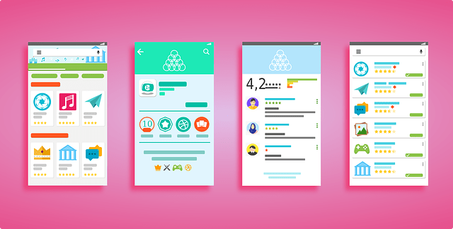

La interfaz de usuario, Interacción Humano Ordenador
QUÉ ES INTERFAZ DE USUARIO
Ejemplos de Interfaz de Usuario

Resultado de imágenes de Google para
https://i1.wp.com/www.ribosomatic.com/wp-content/uploads/2009/05/user-interface-1655006_640.png?fit=640%2C324&ssl=1.
(2021). Retrieved 5 April 2021, from
https://www.google.com/imgres?imgurl=https%3A%2F%2Fi1.wp.com%2Fwww.ribosomatic.com%2Fwp-content%2Fuploads%2F2009%2F05%2Fuser-interface-1655006_640.png%3Ffit%3D640%252C324%26ssl%3D1&imgrefurl=https%3A%2F%2Fwww.ribosomatic.com%2Farticulos%2Ftop-20-ejemplos-de-interfaz-de-usuario-ui-con-jquery%2F&tbnid=vr4hLZosDe8JUM&vet=12ahUKEwi5yemihOjvAhVSQsAGHWYLDMoQMygAegUIARC7AQ..i&docid=H-eFlVOTY66rTM&w=640&h=324&q=interfaz%20de%20usuario&hl=es-419&ved=2ahUKEwi5yemihOjvAhVSQsAGHWYLDMoQMygAegUIARC7AQ
Resultado de imágenes de Google para
https://i1.wp.com/www.ribosomatic.com/wp-content/uploads/2009/05/user-interface-1655006_640.png?fit=640%2C324&ssl=1.
(2021). Retrieved 5 April 2021, from
https://www.google.com/imgres?imgurl=https%3A%2F%2Fi1.wp.com%2Fwww.ribosomatic.com%2Fwp-content%2Fuploads%2F2009%2F05%2Fuser-interface-1655006_640.png%3Ffit%3D640%252C324%26ssl%3D1&imgrefurl=https%3A%2F%2Fwww.ribosomatic.com%2Farticulos%2Ftop-20-ejemplos-de-interfaz-de-usuario-ui-con-jquery%2F&tbnid=vr4hLZosDe8JUM&vet=12ahUKEwi5yemihOjvAhVSQsAGHWYLDMoQMygAegUIARC7AQ..i&docid=H-eFlVOTY66rTM&w=640&h=324&q=interfaz%20de%20usuario&hl=es-419&ved=2ahUKEwi5yemihOjvAhVSQsAGHWYLDMoQMygAegUIARC7AQ